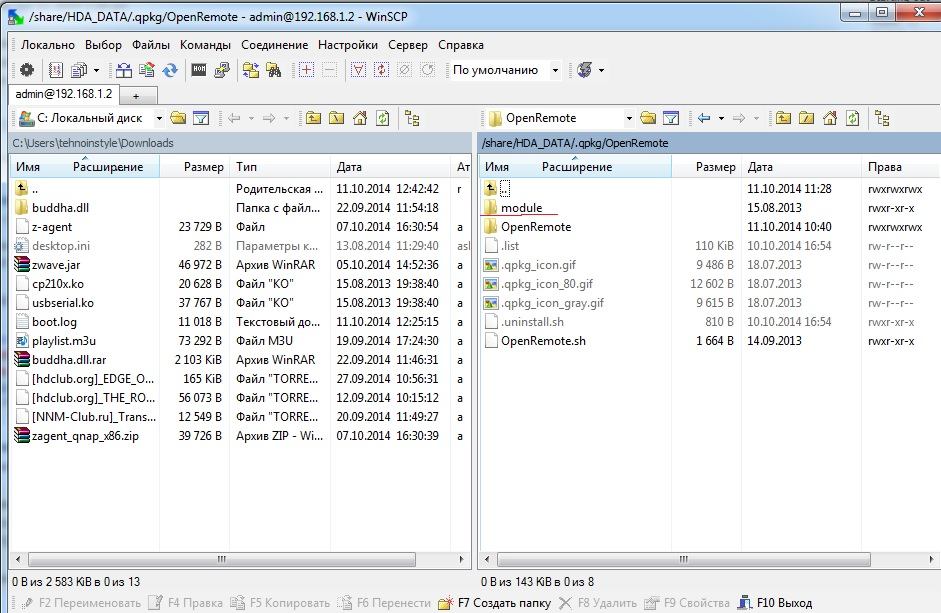
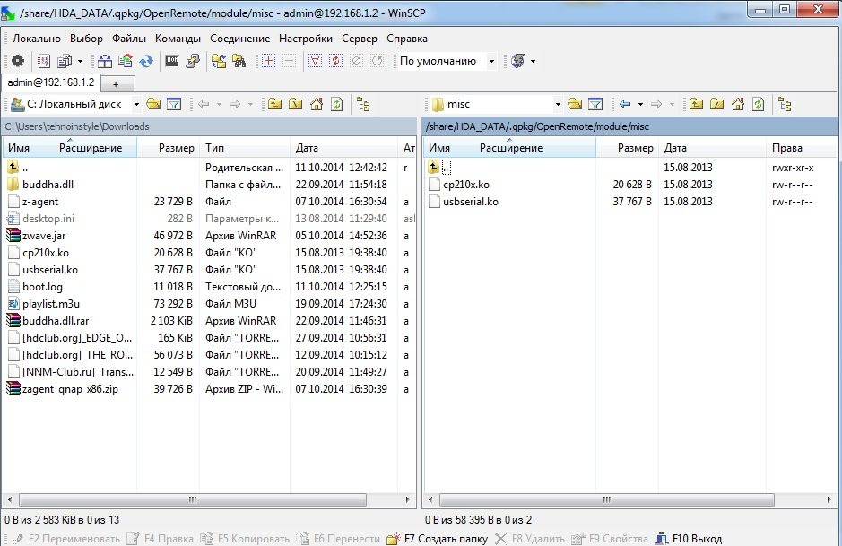

Problem solved, thank you all for your help. The solution in the last post.
Sorry for my English.
Please help in launching OpenRemote on TS-119. Ready to open access to NAS.
Drivers installed.
uname -a
Linux NAS8CBFE9 3.4.6 #1 Fri Oct 3 16:06:36 CST 2014 armv5tel unknown
insmod /usr/local/modules/usbserial.ko
insmod /usr/local/modules/ftdi_sio.ko
insmod /usr/local/modules/pl2303.ko
insmod /usr/local/modules/cp210x.ko
- lsusb
Bus 001 Device 002: ID 058f:6254 Alcor Micro Corp. USB Hub
Bus 001 Device 001: ID 1d6b:0002 Linux Foundation 2.0 root hub
Bus 001 Device 003: ID 10c4:ea60 Cygnal Integrated Products, Inc. CP210x Composite De vice
- dmesg
[ 193.820310] usbserial: version magic '2.6.33.2 mod_unload ARMv5 ' should be '3.4.6 mod_unload ARMv5 p2v8 '
[ 193.877748] cp210x: version magic '2.6.33.2 mod_unload ARMv5 ' should be '3.4.6 mod_unload ARMv5 p2v8 '
[ 1306.938878] usbserial: version magic '2.6.33.2 mod_unload ARMv5 ' should be '3.4.6 mod_unload ARMv5 p2v8 '
[ 1306.968764] cp210x: version magic '2.6.33.2 mod_unload ARMv5 ' should be '3.4.6 mod_unload ARMv5 p2v8 '
[ 2075.744743] usbcore: registered new interface driver usbserial
[ 2075.750609] usbserial: USB Serial Driver core
[ 2086.864664] usbcore: registered new interface driver ftdi_sio
[ 2086.884393] USB Serial support registered for FTDI USB Serial Device
[ 2086.890925] ftdi_sio: v1.6.0:USB FTDI Serial Converters Driver
[ 2103.884721] usbcore: registered new interface driver pl2303
[ 2103.914291] USB Serial support registered for pl2303
[ 2120.584680] usbcore: registered new interface driver cp210x
[ 2120.604458] USB Serial support registered for cp210x
[ 2120.609523] cp210x 1-1.1:1.0: cp210x converter detected
[ 2120.704753] usb 1-1.1: reset full-speed USB device number 3 using orion-ehci
[ 2120.844711] usb 1-1.1: cp210x converter now attached to ttyUSB0
- cat /proc/bus/usb/devices
T: Bus=01 Lev=02 Prnt=02 Port=00 Cnt=01 Dev#= 3 Spd=12 MxCh= 0
D: Ver= 1.10 Cls=00(>ifc ) Sub=00 Prot=00 MxPS=64 #Cfgs= 1
P: Vendor=10c4 ProdID=ea60 Rev= 1.00
S: Manufacturer=Silicon Labs
S: Product=CP2102 USB to UART Bridge Controller
S: SerialNumber=0001
C:* #Ifs= 1 Cfg#= 1 Atr=80 MxPwr=100mA
I:* If#= 0 Alt= 0 #EPs= 2 Cls=ff(vend.) Sub=00 Prot=00 Driver=cp210x
E: Ad=81(I) Atr=02(Bulk) MxPS= 64 Ivl=0ms
E: Ad=01(O) Atr=02(Bulk) MxPS= 64 Ivl=0ms
E: Ad=01(O) Atr=02(Bulk) MxPS= 64 Ivl=0ms
- more /etc/group
administrators:x:0:admin
everyone:x:100:admin
guest:x:65534:guest
uucp:x:101:openremote
dialout:x:102:openremote
- ls -lh /dev/ttyUSB0
crwxrwxrwx 1 admin dialout 188, 0 Oct 11 11:28 /dev/ttyUSB0
In boot.log:
DEBUG 2014-10-11 08:47:52,649 : Deployer 'Default Deployer' initialized.
DEBUG 2014-10-11 08:47:54,058 : Runtime object model has not been initialized. Using default configuration only.
DEBUG 2014-10-11 08:47:54,182 : Runtime object model has not been initialized. Using default configuration only.
DEBUG 2014-10-11 08:47:54,184 : Runtime object model has not been initialized. Using default configuration only.
DEBUG 2014-10-11 08:47:54,217 : Runtime object model has not been initialized. Using default configuration only.
INFO 2014-10-11 08:47:54,244 :
--------------------------------------------------------------------
DEPLOYING NEW CONTROLLER RUNTIME...
--------------------------------------------------------------------
DEBUG 2014-10-11 08:48:06,177 : Initializing event processor: Drools Rule Engine
INFO 2014-10-11 08:48:06,206 : No rule definitions found in '/share/HDA_DATA/.qpkg/OpenRemote/OpenRemote/webapps/controller/rules'.
INFO 2014-10-11 08:48:06,207 : Initialized event processor : Drools Rule Engine
DEBUG 2014-10-11 08:48:06,208 : Initializing event processor: RRD4J Data Logger
INFO 2014-10-11 08:48:06,900 : Initialized event processor : RRD4J Data Logger
DEBUG 2014-10-11 08:48:06,901 : Initializing event processor: EmonCMS Data Logger
INFO 2014-10-11 08:48:06,901 : Initialized event processor : EmonCMS Data Logger
INFO 2014-10-11 08:48:06,913 : Startup complete.
INFO 2014-10-11 08:48:06,916 : Controller Definition File Watcher for Default Deployer started.
DEBUG 2014-10-11 09:24:16,985 : Deployer 'Default Deployer' initialized.
DEBUG 2014-10-11 09:24:18,021 : Runtime object model has not been initialized. Using default configuration only.
DEBUG 2014-10-11 09:24:18,081 : Runtime object model has not been initialized. Using default configuration only.
DEBUG 2014-10-11 09:24:18,082 : Runtime object model has not been initialized. Using default configuration only.
DEBUG 2014-10-11 09:24:18,117 : Runtime object model has not been initialized. Using default configuration only.
INFO 2014-10-11 09:24:18,144 :
--------------------------------------------------------------------
DEPLOYING NEW CONTROLLER RUNTIME...
--------------------------------------------------------------------
DEBUG 2014-10-11 09:24:29,743 : Initializing event processor: Drools Rule Engine
INFO 2014-10-11 09:24:29,757 : No rule definitions found in '/share/HDA_DATA/.qpkg/OpenRemote/OpenRemote/webapps/controller/rules'.
INFO 2014-10-11 09:24:29,758 : Initialized event processor : Drools Rule Engine
DEBUG 2014-10-11 09:24:29,758 : Initializing event processor: RRD4J Data Logger
INFO 2014-10-11 09:24:30,438 : Initialized event processor : RRD4J Data Logger
DEBUG 2014-10-11 09:24:30,439 : Initializing event processor: EmonCMS Data Logger
INFO 2014-10-11 09:24:30,439 : Initialized event processor : EmonCMS Data Logger
INFO 2014-10-11 09:24:30,452 : Startup complete.
INFO 2014-10-11 09:24:30,455 : Controller Definition File Watcher for Default Deployer started.
ERROR 2014-10-11 09:25:14,186 : Unable to store user credentials. Background API requests will not be able to authenticate: java.io.IOException: Error initialising store of key store: java.security.InvalidKeyException: Illegal key size
org.openremote.security.KeyManager$KeyManagerException: java.io.IOException: Error initialising store of key store: java.security.InvalidKeyException: Illegal key size
at org.openremote.security.PasswordManager.add(PasswordManager.java:373)
at org.openremote.security.PasswordManager.addPassword(PasswordManager.java:185)
at org.openremote.controller.service.Deployer$BeehiveConnection.storeCredentials(Deployer.java:1665)
at org.openremote.controller.service.Deployer$BeehiveConnection.downloadZip(Deployer.java:1573)
at org.openremote.controller.service.Deployer$BeehiveConnection.access$200(Deployer.java:1470)
at org.openremote.controller.service.Deployer.deployFromOnline(Deployer.java:550)
at org.openremote.controller.action.ConfigManageController.syncOnline(ConfigManageController.java:140)
at sun.reflect.NativeMethodAccessorImpl.invoke0(Native Method)
at sun.reflect.NativeMethodAccessorImpl.invoke(NativeMethodAccessorImpl.java:57)
at sun.reflect.DelegatingMethodAccessorImpl.invoke(DelegatingMethodAccessorImpl.java:43)
at java.lang.reflect.Method.invoke(Method.java:606)
at org.springframework.web.servlet.mvc.multiaction.MultiActionController.invokeNamedMethod(MultiActionController.java:434)
at org.springframework.web.servlet.mvc.multiaction.MultiActionController.handleRequestInternal(MultiActionController.java:372)
at org.springframework.web.servlet.mvc.AbstractController.handleRequest(AbstractController.java:153)
at org.springframework.web.servlet.mvc.SimpleControllerHandlerAdapter.handle(SimpleControllerHandlerAdapter.java:45)
at org.springframework.web.servlet.DispatcherServlet.doDispatch(DispatcherServlet.java:806)
at org.springframework.web.servlet.DispatcherServlet.doService(DispatcherServlet.java:736)
at org.springframework.web.servlet.FrameworkServlet.processRequest(FrameworkServlet.java:396)
at org.springframework.web.servlet.FrameworkServlet.doPost(FrameworkServlet.java:360)
at javax.servlet.http.HttpServlet.service(HttpServlet.java:637)
at javax.servlet.http.HttpServlet.service(HttpServlet.java:717)
at org.apache.catalina.core.ApplicationFilterChain.internalDoFilter(ApplicationFilterChain.java:290)
at org.apache.catalina.core.ApplicationFilterChain.doFilter(ApplicationFilterChain.java:206)
at org.openremote.controller.rest.support.json.JSONCallbackFilter.doFilter(JSONCallbackFilter.java:63)
at org.apache.catalina.core.ApplicationFilterChain.internalDoFilter(ApplicationFilterChain.java:235)
at org.apache.catalina.core.ApplicationFilterChain.doFilter(ApplicationFilterChain.java:206)
at org.springframework.web.filter.CharacterEncodingFilter.doFilterInternal(CharacterEncodingFilter.java:78)
at org.springframework.web.filter.OncePerRequestFilter.doFilter(OncePerRequestFilter.java:77)
at org.apache.catalina.core.ApplicationFilterChain.internalDoFilter(ApplicationFilterChain.java:235)
at org.apache.catalina.core.ApplicationFilterChain.doFilter(ApplicationFilterChain.java:206)
at org.apache.catalina.core.StandardWrapperValve.invoke(StandardWrapperValve.java:233)
at org.apache.catalina.core.StandardContextValve.invoke(StandardContextValve.java:191)
at org.apache.catalina.core.StandardHostValve.invoke(StandardHostValve.java:128)
at org.apache.catalina.valves.ErrorReportValve.invoke(ErrorReportValve.java:102)
at org.apache.catalina.core.StandardEngineValve.invoke(StandardEngineValve.java:109)
at org.apache.catalina.connector.CoyoteAdapter.service(CoyoteAdapter.java:286)
at org.apache.coyote.http11.Http11Processor.process(Http11Processor.java:845)
at org.apache.coyote.http11.Http11Protocol$Http11ConnectionHandler.process(Http11Protocol.java:583)
at org.apache.tomcat.util.net.JIoEndpoint$SocketProcessor.run(JIoEndpoint.java:354)
at java.util.concurrent.ThreadPoolExecutor.runWorker(ThreadPoolExecutor.java:1145)
at java.util.concurrent.ThreadPoolExecutor$Worker.run(ThreadPoolExecutor.java:615)
at java.lang.Thread.run(Thread.java:745)
Caused by: java.security.KeyStoreException: java.io.IOException: Error initialising store of key store: java.security.InvalidKeyException: Illegal key size
at org.bouncycastle.jcajce.provider.keystore.bc.BcKeyStoreSpi.engineSetKeyEntry(Unknown Source)
at java.security.KeyStoreSpi.engineSetEntry(KeyStoreSpi.java:549)
at java.security.KeyStore.setEntry(KeyStore.java:1326)
at org.openremote.security.PasswordManager.add(PasswordManager.java:368)
... 41 more
DEBUG 2014-10-11 09:25:14,211 : Resolved URI to 'file:/share/HDA_DATA/.qpkg/OpenRemote/OpenRemote/webapps/controller/panels.obj'
DEBUG 2014-10-11 09:25:14,212 : Attempting to extract 'panels.obj' to '/share/HDA_DATA/.qpkg/OpenRemote/OpenRemote/webapps/controller/panels.obj'.
DEBUG 2014-10-11 09:25:14,281 : Extraction of 'panels.obj' to '/share/HDA_DATA/.qpkg/OpenRemote/OpenRemote/webapps/controller/panels.obj' completed.
DEBUG 2014-10-11 09:25:14,282 : Resolved URI to 'file:/share/HDA_DATA/.qpkg/OpenRemote/OpenRemote/webapps/controller/panel.xml'
DEBUG 2014-10-11 09:25:14,282 : Attempting to extract 'panel.xml' to '/share/HDA_DATA/.qpkg/OpenRemote/OpenRemote/webapps/controller/panel.xml'.
DEBUG 2014-10-11 09:25:14,291 : Extraction of 'panel.xml' to '/share/HDA_DATA/.qpkg/OpenRemote/OpenRemote/webapps/controller/panel.xml' completed.
DEBUG 2014-10-11 09:25:14,292 : Resolved URI to 'file:/share/HDA_DATA/.qpkg/OpenRemote/OpenRemote/webapps/controller/controller.xml'
DEBUG 2014-10-11 09:25:14,292 : Attempting to extract 'controller.xml' to '/share/HDA_DATA/.qpkg/OpenRemote/OpenRemote/webapps/controller/controller.xml'.
DEBUG 2014-10-11 09:25:14,326 : Extraction of 'controller.xml' to '/share/HDA_DATA/.qpkg/OpenRemote/OpenRemote/webapps/controller/controller.xml' completed.
DEBUG 2014-10-11 09:25:14,327 : Resolved URI to 'file:/share/HDA_DATA/.qpkg/OpenRemote/OpenRemote/webapps/controller/rules/modeler_rules.drl'
DEBUG 2014-10-11 09:25:14,328 : Attempting to extract 'rules/modeler_rules.drl' to '/share/HDA_DATA/.qpkg/OpenRemote/OpenRemote/webapps/controller/rules/modeler_rules.drl'.
DEBUG 2014-10-11 09:25:14,329 : Extraction of 'rules/modeler_rules.drl' to '/share/HDA_DATA/.qpkg/OpenRemote/OpenRemote/webapps/controller/rules/modeler_rules.drl' completed.
INFO 2014-10-11 09:25:15,159 :
--------------------------------------------------------------------
UNDEPLOYING CURRENT CONTROLLER RUNTIME...
--------------------------------------------------------------------
DEBUG 2014-10-11 09:25:15,167 : Stopping event processor: Drools Rule Engine
INFO 2014-10-11 09:25:15,168 : Stopped event processor : Drools Rule Engine
DEBUG 2014-10-11 09:25:15,168 : Stopping event processor: RRD4J Data Logger
INFO 2014-10-11 09:25:15,207 : Stopped event processor : RRD4J Data Logger
DEBUG 2014-10-11 09:25:15,208 : Stopping event processor: EmonCMS Data Logger
INFO 2014-10-11 09:25:15,208 : Stopped event processor : EmonCMS Data Logger
INFO 2014-10-11 09:25:15,213 : Shutdown complete.
INFO 2014-10-11 09:25:15,215 :
--------------------------------------------------------------------
DEPLOYING NEW CONTROLLER RUNTIME...
--------------------------------------------------------------------
DEBUG 2014-10-11 09:25:15,353 : Initializing event processor: Drools Rule Engine
INFO 2014-10-11 09:25:15,355 : No rule definitions found in '/share/HDA_DATA/.qpkg/OpenRemote/OpenRemote/webapps/controller/rules'.
INFO 2014-10-11 09:25:15,356 : Initialized event processor : Drools Rule Engine
DEBUG 2014-10-11 09:25:15,367 : Initializing event processor: RRD4J Data Logger
INFO 2014-10-11 09:25:15,468 : Initialized event processor : RRD4J Data Logger
DEBUG 2014-10-11 09:25:15,469 : Initializing event processor: EmonCMS Data Logger
INFO 2014-10-11 09:25:15,469 : Initialized event processor : EmonCMS Data Logger
INFO 2014-10-11 09:25:15,484 : Startup complete.
In zwave.log 0 kB
On Synology DS-214Play able to install and works fine.
{kind=link}
{kind=link}
{kind=link}
{kind=link}
|
Did you read this http://www.openremote.org/display/docs/OpenRemote+2.0+How+To+-+Controller+on+QNAP+NAS |
|
Yes. http://forum.qnap.com/viewtopic.php?f=306&t=80225 |
|
What version of the controller are you using ? |
|
Install the package OpenRemote_2.1.0.0713_arm-x19.qpkg, launched, sync wiht account, received line: [ 193.820310] usbserial: version magic '2.6.33.2 mod_unload ARMv5 ' should be '3.4.6 mod_unload ARMv5 p2v8 ' Stop. Replaced in the folder /share/HDA_DATA/.qpkg/Openremote/module/misc/ files usbserial.ko and cp210x.ko (appeared after installation Openremote), on the files usbserial.ko and cp210x.ko in the folder /mnt/ext/usr/local/module/. After reboot, received line: [ 2075.744743] usbcore: registered new interface driver usbserial without a team insmod, and line: In zwave.log 0 kB Then updated to OpenRemote-Controller-2.1.0_FM_SNAPSHOT-2014-09-04, In zwave.log 0 kB.  |
|
Try on. 4) This install will create the following files on the Synology: /lib/modules/usbserial.ko 5) Must modify the load order of the drivers by modifying the 4 line in the /usr/syno/etc.defaults/rc.d/S99Modules.sh file to: MODULES="usbserial.ko ftdi_sio.ko pl2303.ko cp210x.ko" (usbserial.ko driver must load first) I did likewise, on screen. after reboot:
(on qnap TS-119) stick out [ 660.402837] usb 1-1.1: USB disconnect, device number 3 stick insert [ 821.404507] usb 1-1.1: new full-speed USB device number 4 using orion-ehci (on syno DS-214play) [ 27.564946] usbcore: registered new interface driver usbserial
(on qnap TS-119) T: Bus=01 Lev=02 Prnt=02 Port=00 Cnt=01 Dev#= 3 Spd=12 MxCh= 0 (on syno DS-214play) T: Bus=05 Lev=01 Prnt=01 Port=00 Cnt=01 Dev#= 2 Spd=12 MxCh= 0
(on qnap TS-119) Module Size Used by Tainted: P (on syno DS-214play) cp210x 11323 0 change permission on /var/lock и /ttyUSB0 0777
(on qnap TS-119) crwxrwxrwx 1 admin administ 188, 0 Oct 12 13:49 /dev/ttyUSB0 boot.log DEPLOYING NEW CONTROLLER RUNTIME... -------------------------------------------------------------------- DEBUG 2014-10-12 11:06:01,232 : Initializing event processor: Drools Rule Engine zwave.log 0 kB (on syno DS-214play) DiskStation> ls -lh /dev/ttyUSB* boot.log DEPLOYING NEW CONTROLLER RUNTIME... -------------------------------------------------------------------- INFO 2014-10-12 14:29:16,151 : No rule definitions found in '/volume1/@appstore/OpenRemote/webapps/controller/rules'. zwave.log INFO 2014-10-12 14:29:06,048 (Z-Wave): Reader thread asked to start |
|
It is based on the article: http://www.openremote.org/display/docs/OpenRemote+2.0+How+To+-+Synology+with+Z-Wave Qnap TS-119 (FW:4.1.1 last 03.10.14). Install Optware IPKG. We need a driver pl2303.ko, if it is not in /mnt/ext/usr/local/modules/, set it on the article: http://forum.qnap.com/viewtopic.php?f=24&t=97937#p439063 I managed to compile the module myself, here are the steps I did ... you will need to modify step 7 for the device you have 1. Download source from http://www.sourceforge.net/projects/qosgpl Install JRE_7 (http://wiki.qnap.com/wiki/Category:JRE) and Openremote (http://forum.qnap.com/viewtopic.php?f=306&t=80225) Do not run Openremote. Remove from folder /share/HDA_DATA/.qpkg/OpenRemote/module/misc/ files usbserial.ko and cp210x.ko (they are out of date). In file QS102Openremote in folder /etc/rcK.d to add the following lines (red): #!/bin/sh case "$1" in Reboot NAS.Insert stick.
(on qnap TS-119) [ 194.844730] usbcore: registered new interface driver usbserial
(on qnap TS-119) T: Bus=01 Lev=02 Prnt=02 Port=00 Cnt=01 Dev#= 3 Spd=12 MxCh= 0
(on qnap TS-119) Module Size Used by Tainted: P The package needs to be updated. Download the latest distribution Openremote in folder Download. > unzip /share/HDA_DATA/download/OpenRemote-Controller-2.1.0_Developer-Snapshot-20140904.zip ##Remove the webapps folder under the OpenRemote package install > rm -fr /share/HDA_DATA/.qpkg/OpenRemote/OpenRemote/webapps ##Copy snapshot distro webapps directory into package folder > cp -r /share/HDA_DATA/download/OpenRemote/webapps /share/HDA_DATA/.qpkg/OpenRemote/OpenRemote/ ##Change DEBUG setting as instructed in the Configure of System Section. > chown -R admin.users /share/HDA_DATA/.qpkg/OpenRemote/OpenRemote/webapps OpenRemote uses a Java library to communicate via serial port to your Aeon device. For this, it uses the native libraries stored in: /share/HDA_DATA/.qpkg/OpenRemote/OpenRemote/webapps/controller/WEB-INF/lib/native. For Qnap, this will not work as it's using a RISC processor. So, you have to retrieve the ARM compiled native serial libraries. For this: > cd /share/HDA_DATA/.qpkg/OpenRemote/OpenRemote/webapps/controller/WEB-INF/lib/native Permission OpenRemote service account to allow the creation of OS locks. This will be needed to ensure a resource lock is created when communicating the serial port of the USB device. For this: Permission openremote to the USB port device. change permission on /var/lock и /ttyUSB0 0777
(on qnap TS-119) crwxrwxrwx 1 admin administ 188, 0 Oct 12 13:49 /dev/ttyUSB0 Start Openremote and sync with my account. zwave.log: INFO 2014-10-12 14:02:33,933 (Z-Wave): Reader thread asked to start |
|
Dear Aleksey, Thanks for the instructions. However I'm struggling with the new QTS4.2 on a QNAP TS-451 (new x86 architecture). I followed your instructions as far as possible, but I'm facing the following problems: 1. I can actually only use entware-ng instead of optware # make oldconfig HOSTCC scripts/basic/fixdep scripts/basic/fixdep: error while loading shared libraries: libgcc_s.so.1: wrong ELF class: ELF CLASS32 scripts/Makefile.host:118: recipe for target 'scripts/basic/fixdep' failed make[1]: *** [scripts/basic/fixdep] Error 127 Makefile:419: recipe for target 'scripts_basic' failed make: *** [scripts_basic] Error 2 Does anyone know what that means? 6. In step 12, well, I receive an error message again: # make modules HOSTCC scripts/basic/fixdep scripts/basic/fixdep: error while loading shared libraries: libgcc_s.so.1: wrong ELF class: ELFCLASS32 scripts/Makefile.host:118: recipe for target 'scripts/basic/fixdep' failed make[2]: *** [scripts/basic/fixdep] Error 127 /share/CE_CACHEDEV1_DATA/Public/GPL_TS/src/linux-3.10.20-tas/Makefile:419: recipe for target 'scripts_basic' failed make[1]: *** [scripts_basic] Error 2 The present kernel configuration has modules disabled. Type 'make config' and enable loadable module support. Then build a kernel with module support enabled. Makefile:1002: recipe for target 'modules' failed make: *** [modules] Error 1 7. In the end I could locate the missing driver files and could edit the file "/etc/rcK.d to" as described. Rebooting the NAS and using the lsmod command provided me the list of the four drivers to be in "LIVE" modus. So far so could. 8. Since I have installed the most recent version of OpenRemote (as of Feb 2016, 2.1.0) on my NAS, I skipped the part with replacing the old package under webapps. 9. JAVA could be enabled via the App-Store, so I assume that I can skip the following steps aswell. 10. Adding the users groups was executable. The command "more /etc/group" gave me the same result as described in the intstruction. However, with "ls -lh...", I get the following reply: crw-r--r-- 1 admin dialout 188, 0 Mar 18 12:24 /dev/ttyUSB0 11. In the end the only text which is written in the zwave.log is the following (so it seems, something happens, but there are not log entries at all...): "INFO 2016-03-17 13:37:50,496 (Z-Wave): -------------------------------------------------------------------- OpenRemote Z-Wave protocol version : '2.0.0' -------------------------------------------------------------------- " Any suggestion how I can run OpenRemote on the new NAS system would be a great help! |
|
Hi. When a you Z-Wave stick included in Qnap, what show the command: |
|
Hi, Thanks for your fast reply. #command uname -a #returns Linux qnap 3.12.6 #1 SMP Sat Jan 30 13:01:08 CST 2016 x86_64 unknown #command dmesg #returns for USB [...] [ 259.454161] usbcore: registered new interface driver cp210x [ 259.461093] usbserial: USB Serial support registered for cp210x [ 259.515563] usbcore: registered new interface driver ftdi_sio [ 259.522003] usbserial: USB Serial support registered for FTDI USB Serial Device ## plugging the stick in, add: [ 3197.562510] usb 1-2: USB disconnect, device number 3 [ 3229.503490] usb 1-2: new full-speed USB device number 5 using xhci_hcd [~] # lsusb Bus 001 Device 002: ID 1c05:2074 Bus 001 Device 003: ID 0658:0200 Sigma Designs, Inc. Bus 001 Device 004: ID 1005:b155 Apacer Technology, Inc. Bus 001 Device 001: ID 1d6b:0002 Linux Foundation 2.0 root hub Bus 002 Device 002: ID 1c05:3074 Bus 002 Device 001: ID 1d6b:0003 Linux Foundation 3.0 root hub [~] # ls -lh /dev/ttyUSB* crw-r--r-- 1 admin administ 188, 0 Mar 19 12:20 /dev/ttyUSB0 So that's all I get as output from Putty at the moment. However, when I check the boot.log, I get the following notice, stating an error when trying to attempt to create a sensor: -------------------------------------------------------------------- DEPLOYING NEW CONTROLLER RUNTIME... -------------------------------------------------------------------- DEBUG 2016-03-19 11:23:39,177 : Created object model for Command( ID = 29, Type = zwave, Properties : {name=Inclusion On, nodeId=1, command=INCLUSION_MODE_ON}). DEBUG 2016-03-19 11:23:39,177 : Created object model for Command( ID = 30, Type = zwave, Properties : {name=Inclusion Status, nodeId=1, command=INCLUSION_MODE_STATUS}). DEBUG 2016-03-19 11:23:39,177 : Created object model for Command( ID = 31, Type = zwave, Properties : {name=Inclusion OFF, nodeId=1, command=INCLUSION_MODE_OFF}). DEBUG 2016-03-19 11:23:39,178 : Created object model for Command( ID = 32, Type = zwave, Properties : {name=Exclusion On, nodeId=1, command=EXCLUSION_MODE_ON}). DEBUG 2016-03-19 11:23:39,178 : Created object model for Command( ID = 33, Type = zwave, Properties : {name=Exclusion Off, nodeId=1, command=EXCLUSION_MODE_OFF}). DEBUG 2016-03-19 11:23:39,178 : Created object model for Command( ID = 34, Type = zwave, Properties : {name=Exclusion Status, nodeId=1, command=EXCLUSION_MODE_STATUS}). DEBUG 2016-03-19 11:23:39,178 : Created object model for Command( ID = 35, Type = zwave, Properties : {name=Power On, nodeId=2, command=On}). DEBUG 2016-03-19 11:23:39,178 : Created object model for Command( ID = 36, Type = zwave, Properties : {name=Power Off, nodeId=2, command=Off}). DEBUG 2016-03-19 11:23:39,179 : Created object model for Command( ID = 37, Type = zwave, Properties : {name=Power Status, nodeId=2, command=Status}). DEBUG 2016-03-19 11:23:39,179 : Initializing event processor: Drools Rule Engine INFO 2016-03-19 11:23:39,180 : No rule definitions found in '/share/CE_CACHEDEV1_DATA/.qpkg/OpenRemote/OpenRemote/webapps/controller/rules'. INFO 2016-03-19 11:23:39,180 : Initialized event processor : Drools Rule Engine DEBUG 2016-03-19 11:23:39,180 : Initializing event processor: RRD4J Data Logger INFO 2016-03-19 11:23:39,200 : Initialized event processor : RRD4J Data Logger DEBUG 2016-03-19 11:23:39,200 : Initializing event processor: EmonCMS Data Logger INFO 2016-03-19 11:23:39,200 : Initialized event processor : EmonCMS Data Logger ERROR 2016-03-19 11:23:39,209 : Creating sensor failed. Error : org/openremote/controller/ZWaveConfiguration XML Element : <sensor xmlns="http://www.openremote.org" id="107969761" name="InclusionSwitchSensor" type="switch"> <include type="command" ref="30" /> <state name="on" /> <state name="off" /> </sensor> java.lang.NoClassDefFoundError: org/openremote/controller/ZWaveConfiguration at org.openremote.controller.protocol.zwave.DefaultZWaveConfigurationManager.createZWavePortConfiguration(DefaultZWaveConfigurationManager.java:74) at org.openremote.controller.protocol.zwave.DefaultZWaveConfigurationManager.getPortConfiguration(DefaultZWaveConfigurationManager.java:47) at org.openremote.controller.protocol.zwave.ZWaveCommandBuilder.initZWaveController(ZWaveCommandBuilder.java:245) at org.openremote.controller.protocol.zwave.ZWaveCommandBuilder.build(ZWaveCommandBuilder.java:145) at org.openremote.controller.command.CommandFactory.getCommand(CommandFactory.java:164) at org.openremote.controller.model.xml.Version20SensorBuilder.parseSensorEventProducer(Version20SensorBuilder.java:420) at org.openremote.controller.model.xml.Version20SensorBuilder.build(Version20SensorBuilder.java:287) at org.openremote.controller.deployer.Version20ModelBuilder.buildSensorObjectModelFromXML(Version20ModelBuilder.java:817) at org.openremote.controller.deployer.Version20ModelBuilder.buildSensorModel(Version20ModelBuilder.java:663) at org.openremote.controller.deployer.Version20ModelBuilder.build(Version20ModelBuilder.java:557) at org.openremote.controller.deployer.AbstractModelBuilder.buildModel(AbstractModelBuilder.java:154) at org.openremote.controller.service.Deployer.startup(Deployer.java:858) at org.openremote.controller.service.Deployer.softRestart(Deployer.java:440) at org.openremote.controller.service.Deployer$ControllerDefinitionWatch.run(Deployer.java:1324) at java.lang.Thread.run(Thread.java:745) ERROR 2016-03-19 11:23:39,216 : Creating sensor failed. Error : org/openremote/controller/ZWaveConfiguration XML Element : <sensor xmlns="http://www.openremote.org" id="107969780" name="Power On/Off" type="switch"> <include type="command" ref="37" /> <state name="on" /> <state name="off" /> </sensor> java.lang.NoClassDefFoundError: org/openremote/controller/ZWaveConfiguration at org.openremote.controller.protocol.zwave.DefaultZWaveConfigurationManager.createZWavePortConfiguration(DefaultZWaveConfigurationManager.java:74) at org.openremote.controller.protocol.zwave.DefaultZWaveConfigurationManager.getPortConfiguration(DefaultZWaveConfigurationManager.java:47) at org.openremote.controller.protocol.zwave.ZWaveCommandBuilder.initZWaveController(ZWaveCommandBuilder.java:245) at org.openremote.controller.protocol.zwave.ZWaveCommandBuilder.build(ZWaveCommandBuilder.java:145) at org.openremote.controller.command.CommandFactory.getCommand(CommandFactory.java:164) at org.openremote.controller.model.xml.Version20SensorBuilder.parseSensorEventProducer(Version20SensorBuilder.java:420) at org.openremote.controller.model.xml.Version20SensorBuilder.build(Version20SensorBuilder.java:287) at org.openremote.controller.deployer.Version20ModelBuilder.buildSensorObjectModelFromXML(Version20ModelBuilder.java:817) at org.openremote.controller.deployer.Version20ModelBuilder.buildSensorModel(Version20ModelBuilder.java:663) at org.openremote.controller.deployer.Version20ModelBuilder.build(Version20ModelBuilder.java:557) at org.openremote.controller.deployer.AbstractModelBuilder.buildModel(AbstractModelBuilder.java:154) at org.openremote.controller.service.Deployer.startup(Deployer.java:858) at org.openremote.controller.service.Deployer.softRestart(Deployer.java:440) at org.openremote.controller.service.Deployer$ControllerDefinitionWatch.run(Deployer.java:1324) at java.lang.Thread.run(Thread.java:745) INFO 2016-03-19 11:23:39,220 : Startup complete. What I can confirm is that the hardware (stick and switch) work in a windows environment with OpenRemote. |
|
It should be: dmesg [ 194.844730] usbcore: registered new interface driver usbserial and cat /proc/bus/usb/devices T: Bus=01 Lev=02 Prnt=02 Port=00 Cnt=01 Dev#= 3 Spd=12 MxCh= 0 |
|
True, it seems that the stick is not assigned to ttyUSB0 at all and drivers are not loaded correctly. Further, I figured out that I used the wrong qnap files. Now I have the right ones (the TS-X51 for the correct linux version). However, when I execute your step 11, I get the following problem: [/share/Public/GPL_TS/src/linux-3.12.6] # make oldconfig HOSTCC scripts/basic/fixdep scripts/basic/fixdep: error while loading shared libraries: libgcc_s.so.1: wrong ELF class: ELFCLASS32 scripts/Makefile.host:118: recipe for target 'scripts/basic/fixdep' failed make[1]: *** [scripts/basic/fixdep] Error 127 Makefile:419: recipe for target 'scripts_basic' failed make: *** [scripts_basic] Error 2 I'm currently still looking for a solution... Also, I run in the same problem when trying to execute the make modules command [/share/Public/GPL_TS/src/linux-3.12.6] # make modules HOSTCC scripts/basic/fixdep scripts/basic/fixdep: error while loading shared libraries: libgcc_s.so.1: wrong ELF class: ELFCLASS32 scripts/Makefile.host:118: recipe for target 'scripts/basic/fixdep' failed make[2]: *** [scripts/basic/fixdep] Error 127 /share/CE_CACHEDEV1_DATA/Public/GPL_TS/src/linux-3.12.6/Makefile:419: recipe for target 'scripts_basic' failed make[1]: *** [scripts_basic] Error 2 The present kernel configuration has modules disabled. Type 'make config' and enable loadable module support. Then build a kernel with module support enabled. Makefile:1017: recipe for target 'modules' failed make: *** [modules] Error 1 |
|
Unfortunately, I have no knowledge of Linux to supporting these errors. We need a man who knows the Linux to help. I think you have to write on the forum Qnap. In this forum I found a solution to their problems when installing modules on Qnap TS-119. Generally need 4 module for linux-3.12.6 x86_64 - usbserial.ko, ftdi_sio.ko, pl2303.ko, cp210x.ko - copy to folder /share/HDA_DATA/.qpkg/OpenRemote/module/misc/ I will be interested in the final result. |
|
Hi, well, I have the four modules in this folder. I made some research on the web for checking if the drivers are loaded [~] # lsmod Module Size Used by Tainted: P ftdi_sio 39225 0 - Live 0xffffffffa0779000 cp210x 14702 0 - Live 0xffffffffa0770000 usbserial 28724 3 ftdi_sio,cp210x,pl2303, Live 0xffffffffa01c0000 pl2303 11692 0 - Live 0xffffffffa01ce000 Luckily, the "make modules" command works now: [/share/Public/GPL_TS/src/linux-3.12.6] # make modules scripts/kconfig/conf --silentoldconfig Kconfig make[1]: Nothing to be done for 'relocs'. CHK include/config/kernel.release CHK include/generated/uapi/linux/version.h CHK include/generated/utsrelease.h CALL scripts/checksyscalls.sh <stdin>:1244:2: warning: #warning syscall qsendfile64 not implemented [-Wcpp] CC [M] drivers/mmc/card/sdio_uart.o CC [M] drivers/usb/serial/usb-serial.o CC [M] drivers/usb/serial/generic.o CC [M] drivers/usb/serial/bus.o LD [M] drivers/usb/serial/usbserial.o CC [M] drivers/usb/serial/cp210x.o CC [M] drivers/usb/serial/ftdi_sio.o CC [M] drivers/usb/serial/pl2303.o Building modules, stage 2. MODPOST 187 modules CC drivers/mmc/card/sdio_uart.mod.o LD [M] drivers/mmc/card/sdio_uart.ko CC drivers/usb/serial/cp210x.mod.o LD [M] drivers/usb/serial/cp210x.ko CC drivers/usb/serial/ftdi_sio.mod.o LD [M] drivers/usb/serial/ftdi_sio.ko CC drivers/usb/serial/pl2303.mod.o LD [M] drivers/usb/serial/pl2303.ko CC drivers/usb/serial/usbserial.mod.o LD [M] drivers/usb/serial/usbserial.ko But when I do the compilation of the modules, no *.ko files are created in the \usb\serial\ folder. Instead, the file "modules.buildin" is updated stating that the files are already there. Guess you're right that qnap forum will be a better place for now... |